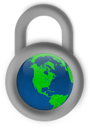

Att tänka på som webbutvecklare
Välkommen till min webbsida! Mitt namn är Lovisa och det är jag som ska dela med mig av mina bästa tips till dig som webbutvecklare. Genom tre enkla steg hjälpa dig att forma din perfekta webbplats.

Schysst
Idag förekommer en hel del typer av oschysst beteende på webben. Detta kan förebyggas på olika sätt. Görs en webbsida med funktioner med kommentarsfält där hela världen har tillgång till att kommentera, kan olika rutiner byggas upp för att undvika negativa tankar och åsikter i form av kommentarer som kan vara kränkande och nedstämmande.
Här kommer tre olika lösningar samt problem som medför:
- En relevant lösning kan vara att ha något som är anställd kolla igenom de kommentarer som görs för att sedan acceptera dem innan de publiceras på webbsidan. Problemet som kan uppstå är att kommentaren måste granskas innan publicering krävs det mer tid som kan behövas till annat arbete. Man kan tycka det är bortkastad tid att sitta och läsa kommentarer utan relevanta synpunkter. Däremot kan kommentarer som är kritiska mot webbsidan vara bra för andra användare att läsa men att.
- En annan lösning kan vara att kommentaren blir omöjlig att publiceras i samband med kränkande ord. Detta är alltså förbestämda ord som ej får förekomma i en kommentar. Dessa förbestämda ord kan inte vara tillräckliga och kränkande kommentarer kan förekomma genom andra formuleringar.
- Det sista alternativet är att kommentarer publiceras på en gång utan förhandsbestämmelser eller att de ska genomgå en granskning. Detta ger alla användare möjlighet att skriva exakt vad den vill och det publiceras direkt. Det gör att olämpliga kommentarer kan förekomma på den webbplatsen, om inte den som bär på huvudansvaret beslutar att ta bort dessa kommentarer i efterhand.
Säkerhet
I många fall på internet är det enda som skyddar dina uppgifter ett lösenord. Därför har det stor betydelse att bestämma ett starkt lösenord som är svårt för andra att lista ut. Under kommande text kommer några tips som kan vara bra att tänka på när du väljer ditt lösenord.
Tips
Undvik personliga referenserEtt stort misstag är att ha ett lösenord som har personliga kopplingar t.ex familjemedlemmar, personnummer osv.
Varierande lösenord
Unika lösenord till dina olika konton är en rekommendation, för att undvika att bli hackad på alla sina konton istället för bara ett. Man säkerhetsställer därmed att ett dataintrång eller ett misstag drabbar ens övriga konton.
Säker lagring av lösenord
Samla alla dina lösenord på helst två säkra ställen som bara du kommer åt. Gärna på papper då det är svårare för andra att komma åt än om det ligger på tekniska hjälpmedel.
Optimala lösenordet
Ett långt lösenord med kombination av både små och stora bokstäver samt siffror och specialtecken är det mest optimala.
Hantering av lösenord
Att behålla lösenord för sig själv är viktigt för att undvika att ens lösenord kommer i fel händer som kan medföra problem. Något som är viktigt att tänka på angående lösenord som hamnar i fel händer, är webbläsare som automatiskt vill spara ditt lösenord för att kunna underlätta för dig vid nästa inloggning. Ta därför för vana att aldrig tillåta webbläsaren spara ditt lösenord för att undvika övertag av lösenord.Vill du veta hur säkert ditt lösenord är? Det kan du ta reda på under följande länk: http://testalosenord.se
Webbhotell
Webbhotell fungerar som en typ av tjänst som gör det möjligt att dela en webbsida över internet och samtidigt använda e-post utan att behöva en egen server. Webbhotell kopplar sig till en internetansluten dator som kallas webbserver, där andra användare kan publicera sina webbsidor. Det är viktigt att tänka egenom en del saker innan du bestämmer dig för vilket webbhotell du vill ha.
Här kommer några frågor du kan ställa dig själv:
Standard & lagar
Många kan uppleva en blogg eller en webbsida som något personligt. Men så länge inte sidan är skyddad med något typ av lösenord är den öppen för hela världen. Därmed är det förbjudet att använda verk som är skyddade med hjälp av upphovsrätten på en webbplats i brist på tillåtelse.
När man arbetar inom webbbranchen är det viktigt att förhålla sig med upphovsrätten och därmed inte bryter mot den när material publiceras på nätet. Skapar du något i stil av en text, ljud, bild etc blir du automatiskt upphovsman till det du har utformat. Det innebär att ingen får använda sig av det du har åstadkommit utan tillstånd av dig.
På opencklckbart bär alla bilder på lisenceser där man får använda sig av alla bilder. Trots det är det schyst att namnge uppbehovsrättsinnehavaren.
Pixabay alla tillåta att använda däremot har vissa en striktare licens än CC0.